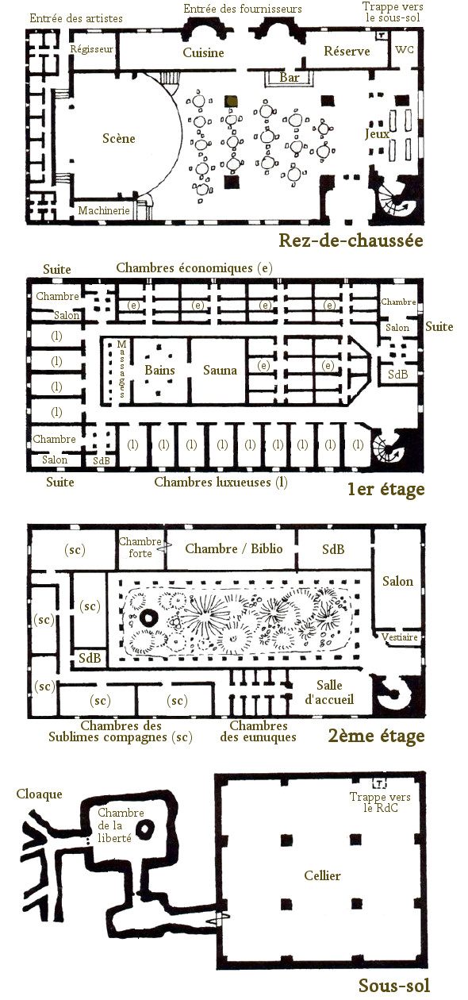

La maison des Mille fleurs
Installée sur le quai des Contrebandiers, la maison des Mille fleurs est l'une des plus anciennes institutions de Laelith. À la fois auberge de luxe, grand restaurant, salle de spectacle, tripot huppé et maison de joie, cette grande construction à la façade couverte de bas-reliefs célébrant tous les plaisirs de l'existence draine une clientèle hétéroclite, qui va du noble-citadin en goguette au coupe-jarret à l'affût d'une proie éventuelle.
Histoire
En l'an 1052, un petit cuisinier du nom de Heriaz d'Esharzy, originaire du sud, vint s'installer à Laelith. Il commença en vendant dans les rues des petits gâteaux parfumés qui connurent rapidement un immense succès. Bien vite il engagea des aides et ouvrit une boutique sur la place de la Cloche. Le commerce continua d'être florissant et, sept ans plus tard, en 1059, ayant amassé une petite fortune et obtenu le titre de baron du quai des Contrebandiers, il décida d'ouvrir un grand restaurant qui allait bientôt devenir la maison des Mille fleurs. Après la mort d'Heriaz, plusieurs générations d'Esharzy se succédèrent aux fourneaux de l'établissement, jusqu'au jour où l'un de ses descendants eut l'idée de génie d'étendre la gamme des plaisirs offerts à la clientèle. Il fit agrandir la maison pour y aménager des chambres à l'étage, puis installa quelques tables de jeu et une scène pour des spectacles au rez-de-chaussée. Ce n'est qu'à la fin de sa vie qu'il créa les Sublimes compagnes.
De nos jours, la maison des Mille fleurs est dirigée par la très séduisante Yphria d'Esharzy, dernière descendante de la lignée. Célibataire et sans enfant, une foule de prétendants plus ou moins intéressés lui papillonnent autour en permanence, mais elle sait se défendre. La guilde des courtisanes, dont elle est membre, veille aussi à la sécurité dYphria.
Rez-de-chaussée
C'est dans l'immense salle commune au rez-de-chaussée du bâtiment que se déroulent la plupart des activités proposées par la maison des Mille fleurs. Quelques tables de jeu, essentiellement dédiées aux jeux de cartes, aux jeux de dés et à la roulette, permettent aux flambeurs de s'adonner à leur vice. Une scène surélevée accueille les artistes les plus divers : acrobates, danseurs, musiciens, conteurs, comédiens, etc. Il est possible pour une somme relativement raisonnable de consommer ici tous les alcools existants et les plats les plus recherchés.
Cuisine. Placée sous la conduite d'un grand chef, elle est d'une propreté légendaire. Les cuisiniers qui y travaillent sont triés sur le volet et exécutent dans le plus grand secret les innombrables recettes exclusives, créées pour la plupart par Heriaz d'Esharzy lui-même et qui ont fait la renommée de la maison. Citons les « Soixante Saveurs du bonheur », la spécialité de l'établissement, qui pour 20 pièces d'or permet de savourer soixante petits plats servis dans des bols de cristal. Certains ont un goût répugnant, ce qui permet d'apprécier mieux encore la délicatesse extraordinaire des autres. C'est sans conteste le sommet de l'art culinaire et gastronomique du royaume.
Régisseur. Le régisseur est la personne en charge des spectacles de la maison des Mille fleurs. Il négocie les contrats, fixe les dates et les horaires, fait quelques fois passer des auditions, et s'occupe de l'intendance, à savoir l'achat des décors et des fournitures nécessaires le cas échéant. Contrairement au Théâtre de Laelith, qui s'efforce de proposer du contenu culturel au milieu d'autres attractions, la maison des Mille fleurs se focalise sur le divertissement.
Loges des artistes. Situées derrière la scène, ces cinq loges pauvrement meublées et exiguës ont accueilli les plus grands.
Premier étage
Le premier étage de la maison des Milles fleurs est occupé par trois types de chambres.
Suites. Il y en a trois, aux angles du bâtiment, toutes aussi somptueuses l'une que l'autre. Les sols sont couverts de tapis moelleux réalisés par les meilleurs artisans de la Main qui travaille, les lits monumentaux sont en ébène sculpté et les salles de bain en marbre. Chaque suite possède sa chambre, son salon privé et sa salle de bain, le tout pour 15 pièces d'or par nuit, compagnie non inclue.
Chambres luxueuses. Elles sont aussi bien décorées que les suites, mais moins spacieuses. L'hôte a un libre accès aux bains et au sauna qui se trouvent au centre de l'étage. Prix de la nuit : 7 pièces d'or.
Chambres économiques. Plus petites, mais toutefois très confortables, elles sont dignes des meilleures auberges. Le client peut lui aussi accéder aux bains communs, mais doit payer le service comme un extra. Prix de la nuit : 3 pièces d'or.
Deuxième étage
Le dernier étage héberge en particulier les appartements d'Yphria d'Esharzy. Toutes les pièces luxueusement décorées regorgent de chefs-d'oeuvre artistiques, évidemment bien protégés par divers pièges magiques. Les fenêtres des lieux sont d'étroites meurtrières garnies de barreaux.
Salle d'accueil. Huit eunuques, qui ont leurs chambres juste à côté et font office d'agents de sécurité, se relaient ici pour gérer l'accès à cet étage. La première étape consiste en une fouille minutieuse des visiteurs. Puis, s'il s'agit de clients pour les Sublimes compagnes, les eunuques perçoivent les honoraires ici avant de les laisser passer dans le couloir. S'il s'agit par contre de visites pour Yphria, ils sont conduits à ses appartements privés ou au jardin, si la propriétaire de lieux en a donné l'autorisation.
Chambres des Sublimes compagnes. C'est là que résident et officient les six Sublimes compagnes. Leurs chambres individuelles sont installées de par et d'autre d'un beau couloir. Leurs portes sont en cristal et permettent aux clients d'apprécier les talents de décoratrice de ces dames, chacune exprimant sa personnalité par l'agencement de son « petit intérieur ». Il n'y a pas de tarif établi, les filles ont un don pour s'adapter aux possibilités économiques de chaque client. Par tradition, les Sublimes compagnes portent un nom d'une fleur. Les actuelles sont Amaryllis, Anthéa, Iris, Garance, Néottie et Pétunia.
Vestiaire. C'est l'entrée des quartiers de la maîtresse des lieux. II s'agit en fait de deux épaisses portes munies d'un mécanisme empêchant leur ouverture simultanée, la première doit être fermée avant que l'on puisse ouvrir la seconde. La première porte s'ouvre avec une clé, et la deuxième est munie d'une serrure complexe qui nécessite un code.
Salon. C'est une pièce somptueuse décorée de tapis épais, de peintures murales chamarrées, et de meubles de grand luxe dont une immense table ovale dont la taille peut être ajustée suivant le nombre de convives.
Salle de bain. La baignoire est en porphyre (pierre volcanique) et les murs sont couverts de plaques d'argent représentant les précédents propriétaires de la maison.
Chambre. Moitié chambre à coucher, moitié bibliothèque (certains des ouvrages sont inestimables), cette pièce est occupée en son centre par un énorme lit à baldaquin en bois doré dont les draps de soie sont tissés de fils d'or.
Chambre forte. Taillée dans un bloc de granit et protégée par une porte d'acier munie d'énormes verrous et dissimulée dans l'âtre d'une cheminée monumentale, cette chambre forte contiendrait plus d'un million de pièces d'or, une partie de la fortune des Esharzy, le reste ayant été judicieusement placé dans les plus grandes entreprises de la ville.
Jardin intérieur. Non abrité, donnant à l'air libre, il contient des fleurs magnifiques importées des quatre coins du monde. Le puits du jardin est en fait un petit portail magique qui donne directement au sous-sol (voir ci-dessous).
Sous-sol
On ne sait pas bien ce qui se passe dans les sous-sols des Mille fleurs, mais il semblerait tout de même qu'il existe des arrangements particuliers entre certaines créatures du cloaque et la famille d'Esharzy. Les commodités offertes aux étages supérieurs seraient en effet également proposées au sous-sol, mais adaptées à cette clientèle particulière. On trouverait ainsi soi-disant des salles de banquets mais aussi des chambres de torture et des salles à orgies.
Chambre de la liberté. Certaines créatures volantes du cloaque éprouvent de temps en temps le besoin de se dégourdir les ailes, mais elles n'ont pas accès au ciel de la cité sainte. La solution pour elles est alors la Chambre de la liberté, une pièce entièrement nue fermée par une lourde grille qui n'a de particulier qu'un conduit. Celui-ci est en fait un portail magique qui mène au puits du jardin intérieur au deuxième étage, à l'air libre. Ainsi, les vampires et autres créatures du cloaque qui peuvent revêtir une forme ailée ont la possibilité, moyennant rétribution, d'aller faire un tour dans le ciel de Laelith. Il leur est toutefois demander de faire cela de nuit et de rester discrets afin de ne pas alerter les autorités.

Personnalités
Yphria d'Esharzy
Yphria d'Esharzy. Cette grande femme brune aux yeux verts de 29 ans est renommée pour sa beauté. Elle administre avec rigueur la maison des Mille fleurs et sait se faire apprécier comme une hôtesse de goût. Dernière descendante d'Heriaz, elle n'a jamais consenti à se marier, mais on lui prête de nombreuses aventures. Son expression froide est compensée par une voix chaude et suave qui a le don de fasciner ses interlocuteurs. Yphria a aussi un autre signe particulier : les ongles longs de ses mains sont protégés par de petits étuis en or enduits de diverses substances très utiles (poison, aphrodisiaque, hallucinogène, soporifique). La jeune femme dissimule aussi plusieurs dagues dans les pans de ses longues robes de soie, et l'on dit qu'elle excelle au combat depuis qu'elle s'entraîne avec Meriag, chaque matin. Son apparence fragile dissimule en fait une personne aussi envoûtante que dangereuse.
Meriag « Briseur d'os »
Meriag « Briseur d'os ». Cet homme gigantesque vêtu d'une cotte de mailles et armé d'une masse d'armes fait plus de 2 mètres de haut et pèse 150 kilos de muscles. Ancien soldat, il a été engagé il y a plusieurs années par Yphria pour superviser la sécurité et la protection de la maison et de son sous-sol. Il excelle au maniement de toutes les armes, mais préfère par-dessus tout briser un par un les membres de ses adversaires à mains nues. Il a sous ses ordres une vingtaine de mercenaires aguerris, qui sont prêts à donner leur vie pour que soit préservée la tranquillité de l'établissement. Meriag habite une chambre économique au premier étage. Il dort peu, a la parole rare, ne boit jamais d'alcool, et accompli un travail au-dessus de tout reproche. Il est également d'une fidélité et d'une loyauté à toute épreuve envers sa patronne, et comme ses hommes il donnera sans hésiter sa vie pour elle.
Endoliam
Endoliam. Ce vieux nain aux oreilles décollées et à l'embonpoint sympathique qui va bientôt fêter ses 300 ans est le grand chef des cuisines de l'établissement depuis bien plus longtemps qu'Yphria en est à sa tête. Il connait sur le bout des doigts toutes les recettes d'Heriaz, qu'il n'a pas connu toutefois, et est considéré à Laelith comme le plus grand cuisinier de tous les temps. Il n'habite pas dans la maison mais dans un bel hôtel particulier à proximité, avec sa femme. Le Roi-Dieu actuel n'est à priori encore jamais venu manger aux Mille fleurs, mais Endoliam est quelques fois demandé au palais et se déplace sur la Haute Terrasse afin de préparer des banquets. Grand amateur de bons vins, c'est un homme bourré d'humour qui, sous son air passif, a toujours une vieille histoire ou une anecdote à raconter, car il en a vu des choses aux Mille fleurs durant toutes ces années.
Songar
Songar. Natif de Laelith, cet humain eunuque de 58 ans qui en parait 15 de moins (grâce à un baume magique qu'il s'applique au visage tous les jours et qui lui coûte une fortune, en plus de la teinture de ses cheveux) a été dans le passé le précepteur d'Yphria. C'est aujourd'hui la seule personne que la propriétaire redoute. Il est en effet célèbre pour ses colères tapageuses, mais son immense gentillesse est également réputée. Très cultivé, intelligent, il dort dans la première chambre de luxe au premier étage, près de l'escalier, et couve Yphria et les Sublimes Compagnes comme si elles étaient ses propres filles. Il n'a aucun rôle officiel dans l'organisation des Milles fleurs, et passe autant de temps dans la maison qu'à l'extérieur, mais Yphria n'a aucun secret pour lui et elle ne prend aucune décision importante sans lui en avoir parlé auparavant - ce qui ne veut toutefois pas dire qu'elle suit tous ses conseils, loin de là !
Basé sur le HS Laelith de Casus Belli, complété par blueace